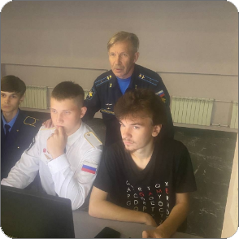
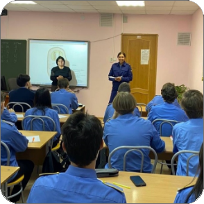
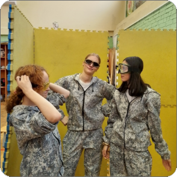
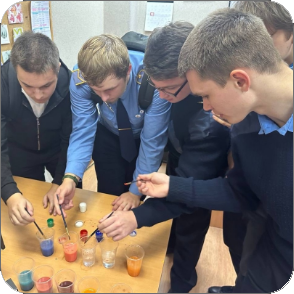
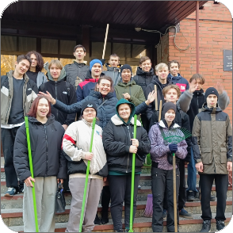
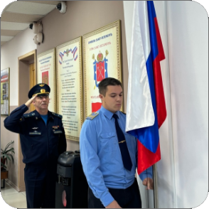

Электронный журнал
ГБПОУ "Колледж Метрополитена и Железнодорожного транспорта"
ГБПОУ "Колледж Метрополитена и Железнодорожного транспорта"
Главная Расписание Журнал Другое


Фестиваль "Вместе целая страна"
прошел в колледже на отделении метрополитена. Якуты, татары, ханты, карелы, буряты, чукчи, дагестанцы - студенты первых курсов представили культуру разных народов, которые населяют Россию.

Информационная безопасность
Сегодня для обучающихся 102, 202 и 302 групп Колледжа метрополитена прошла лекция-беседа на тему "Информационная безопасность". Её провела помощник прокурора Петербургского метрополитена Д.Н. Горбунова.

В рамках государственной программы «Патриотическое воспитание граждан России» отдел поддержки молодежных инициатив СПб ГБУ ПМДЦ «Фрунзенский» провел открытую патриотическую игру «Будь готов!», посвященную Дню Спецназа.

Квест "СТУДдень"
Прошел очередной этап Х Студенческого марафона Фрунзенского района. В нем приняла участие команда нашего колледжа из 5 человек: Александр Яворский, Владислав Милорадов, Алексей Петров, Никита Шиловский, Владислав Савин.

Студенты нашего колледжа всегда поддерживают чистоту на территории учебного заведения и вокруг него. Вот и все последние дни они дружно убирали мусор и опавшие листья.

Равнение на флаг!
Утро в колледже началось с построения и церемонии поднятия флага России. Почетное право поднять флаг было предоставлено студенту группы № 400 Александру Яворскому.